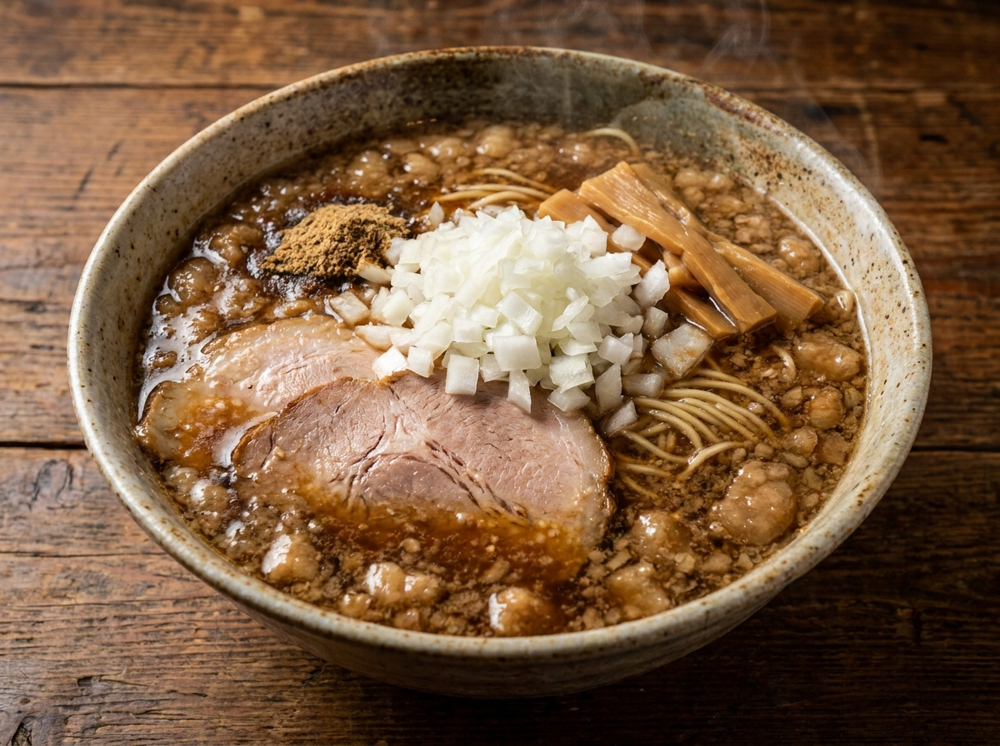
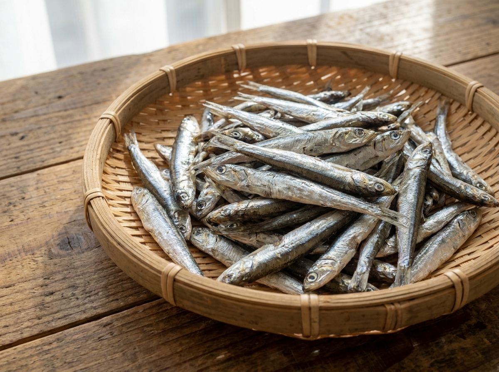

背脂煮干し
鶏白湯に煮干しと鯖をたっぷり。細かな背脂のコクと、香ばしさで。
NIBOSHI RAMEN — TSURUGASHIMA
朝六時、煮干しの一杯から。
鶴ヶ島駅から歩いて1分、らぁ麺の店です。
朝6時台から昼まで｜営業カレンダーはX・Instagramで
※画像はイメージです
ABOUT
東武東上線・鶴ヶ島駅の東口を出て、歩いて1分。2025年4月に暖簾を掛けた、朝6時台から営業するらぁ麺店です。出勤前に、夜勤明けに——朝の一杯「朝ラー」から一日が始まります。
スープの核は煮干し。富山県氷見産の煮干しに、和歌山県のみかんどり、川島町の老舗・笛木醤油など、名前をきちんと言える素材を使っています。「安定感ある背脂煮干で、朝ラー利用も出来る」——クチコミでも、味と朝の使い勝手の両方が評判です。

朝六時、駅前に湯気が立つ。
※画像はイメージです
SHOP INFO
| 店名 | らぁ麺 ならずや |
|---|---|
| 住所 | 埼玉県川越市小堤910-35 エスパスルミエール鶴ヶ島1F |
| アクセス | 東武東上線 鶴ヶ島駅 東口 徒歩約1分 |
| 営業日・時間 | 朝6時台から昼まで。日により変わるため、最新はX・Instagramをご確認ください |
CONTACT
ご連絡はInstagramのDMへお気軽にどうぞ。毎日の営業案内は、XとInstagramで発信されています。